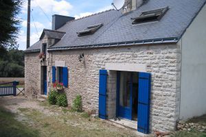

Creagantairbh Mhor (Kilmartin)

Price: £150,000
Creagantairbh Mhor is a lovely highland cottage, which is delightfully located in an idyllic, rural and secluded spot. Currently used as a holiday home the property is comfortable, but would benefit from some sympathetic modernisation and upgrading. The property is heated with electric panels and a solid fuel burner.
The village of Kilmartin, approximately 3 miles to the south has a primary school, local shop and post office, church, hotel and award-winning museum and restaurant. There are many beautiful walks, and dozens of historic landmarks nearby, in fact Kilmartin Glen is stated to have over 350 sites of historic interest.
It is an ideal country property for those wanting to enjoy a peaceful lifestyle, rural pursuits or the nearby yachting marinas. The Crinan Canal is within striking distance and there are marinas at Ardfern, Craobh Haven and Kilmelford.
The property is also within easy commuting distance of Lochgilphead, approximately 13 miles to the south, for work opportunities and shopping facilities. Lochgilphead has a high school, hotels, shops, restaurants, churches, swimming pool, leisure facilities and library and is the headquarters of Argyll and Bute Council. Further facilities can be found at Oban approximately 26 miles to the north.
Creagantairbh Mhor is a lovely highland cottage, which is delightfully located in an idyllic, rural and secluded spot. Currently used as a holiday home the property is comfortable, but would benefit from some sympathetic modernisation and upgrading. The property is heated with electric panel s and a solid fuel burner.
There is a telephone point in the living room and kitchen and a television point in living room.
The house is approached via a private drive accessed across neighbouring farmland which is more suited to a four wheel drive vehicle, however is passable with a conventional vehicle.
The accommodation (with approximate sizes for guidance purposes only) comprises:-
Entrance Vestibule 2.2m x 2.02m
Wooden door with fixed light to the side. Coat hooks. Fitted shelves. Inner door to:-
Lobby
Walk-in store cupboard with shelving light and power. Doors to kitchen and living room.
Living Room 4.4m x 3.5m
Recessed window to the rear (S). Painted wooden panelling to the ceilings and walls. Feature fireplace with wooden mantle, slate hearth and solid fuel burner. Recessed display shelving to the side. Door to:-
Walk-in Store cupboard
Fixed light to front (N). Slatted shelving to sides. Electric light.
Kitchen 5.93m x 2.37m
Window to the side (E). Painted wooden panelling to walls. Wall and floor units in white with wooden handles. Double stainless steel sink unit with mixer tap and drainer. Plumbed for automatic washing machine. Space for fridge and freezer. Space for kitchen table and chairs. Wall mounted meters and circuit breakers. Door to:-
Bedroom 1 3.53m x 2.12m
Recessed window to the side (W) overlooking the fields. Painted wooden panelling to three walls. Recessed hanging space with hot water tank, slatted shelves and hanging rail.
Bathroom 2.55m x 1.96m
Small recessed window to the side (W). Three piece suite comprising wash hand basin, WC and cast-iron bath. Original stone work and painted wooden cladding to the walls. Exposed beams.
Bedroom 2 4.65m x 3.12m
Recessed window to the side (W). Painted wooden panelling to one wall. Open fireplace. Exposed beams. Smoke detector.
Exterior
The property is approached from the A816 via an unmade track and through two gates leading to a gravelled parking and turning area. The immediate garden grounds are laid to grass, with a gravel pathway through to the house. There are a number of ruins in the garden grounds which could, subject to the necessary consents, be developed to provide additional accommodation. The surrounding fields are ideal for grazing horses or sheep, and are mostly grass with a few trees scattered through, extending to approximately 7.5 acres.
Services
Private water
Private drainage to a septic tank
Mains electricity
Telephone
Electric heating and solid fuel burner
Council Tax
Band B
Postcode
PA31 8RH
Grid Reference
NM847 015
Entry
Entry will be by mutual agreement
Viewing
Viewings will be strictly by appointment through the sole selling agents – Specific instructions are available once an appointment is made. If there is a particular aspect of the property which is important to you, then please discuss it with a member of staff of D M MacKinnon Estates in order to avoid a wasted journey.
Note
Viewers are requested to keep dogs on a lead at all times and under strict control. All gates must be left as found.
Closing Date
A closing date may be set for the receipt of offers. Interested parties should note their interest in the property.
|